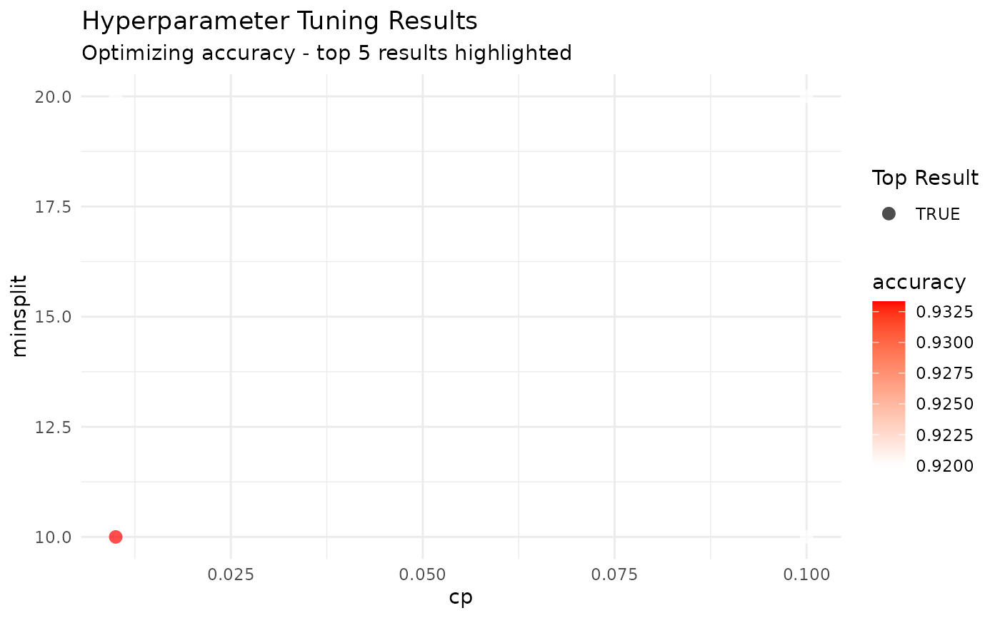

Plot hyperparameter tuning results
Usage
tl_plot_tuning_results(
model,
top_n = 5,
param1 = NULL,
param2 = NULL,
plot_type = "scatter"
)Value
A ggplot object.
Examples
# \donttest{
model <- tl_tune_grid(iris, Species ~ ., method = "tree",
param_grid = list(cp = c(0.01, 0.1), minsplit = c(10, 20)),
folds = 2, verbose = FALSE)
tl_plot_tuning_results(model)

# }